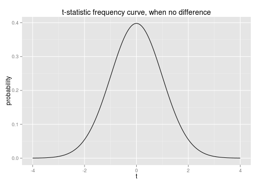

Introduction to Hypothesis Testing and Linear Regression
Statistical Inference
Goal: Test scientific claims and quantify our uncertainty about it.
- Comparing means between groups: the \(t\)-test.
- \(p\)-values
- Confidence intervals
- Associating quantitative variables.
- Linear regression
All the code for this presentation is available here
Comparing means
- Is the mean of one sample significantly larger than another?
- Apply the hypothesis testing framework.
- Initially assume there is no difference in means (Null hypothesis).
- Require proof that the difference is nonzero (Alternative hypothesis).
head(X.true.diff)
## x group
## 1 -0.6339 A
## 2 2.5168 A
## 3 -0.7180 A
## 4 -0.7308 A
## 5 1.0263 A
## 6 0.2749 A
Simulated data with true difference in means:

Simulated data with no difference in means:

\(t\)-test
To quantitatively assess the difference in means, calculate \[t = \frac{\sqrt{n}\left(\bar{X}_{A} - \bar{X}_{B}\right)}{\sqrt{\widehat{Var{X}}}}.\]
- \(n\) is the total number of data points.
- \(\bar{X}_{groups}\) is the mean in that group
- \(\widehat{Var{X}}\) is the sample variance, a measure of the "spread" of that group.
If there is no difference between the groups, we know the distribution of \(t\), as long as a few extra assumptions hold,
- The variances between the two groups are similar.
- Different samples are independent of each other.
- Either data are close to normal (bell-shaped), or there are many (> 30, say) samples.

Application to previous data
# True difference
t.test(x ~ group, data = X.true.diff)
##
## Welch Two Sample t-test
##
## data: x by group
## t = -2.647, df = 98, p-value = 0.009463
## alternative hypothesis: true difference in means is not equal to 0
## 95 percent confidence interval:
## -0.9397 -0.1344
## sample estimates:
## mean in group A mean in group B
## -0.1219 0.4152
# No true difference
t.test(x ~ group, data = X.no.diff)
##
## Welch Two Sample t-test
##
## data: x by group
## t = -0.0945, df = 97.76, p-value = 0.9249
## alternative hypothesis: true difference in means is not equal to 0
## 95 percent confidence interval:
## -0.4009 0.3645
## sample estimates:
## mean in group A mean in group B
## 0.02698 0.04520
Interpretation
- \(p\)-value: The probability of a false positive (area under the frequency curve that is more extreme than the observed statistic).
- Confidence interval: If we repeat the experiment, this (random) interval will contain the true difference in means with 95% probability.
- Both of these quantities are more informative than simply reporting whether we accept or reject the null hypothesis.
Visualizing observed \(t\)-statistics:

Real world example
Data from the EMI music hackathon.

t.test(age ~ music, data = users.impt)
##
## Welch Two Sample t-test
##
## data: age by music
## t = 35.25, df = 1960, p-value < 2.2e-16
## alternative hypothesis: true difference in means is not equal to 0
## 95 percent confidence interval:
## 12.49 13.96
## sample estimates:
## mean in group no.longer.impt mean in group very.impt
## 47.32 34.09
Linear Regression
- Can we estimate the relationship between variables? (red is truth, blue is an estimate)
- Can we quantify our uncertainty about the estimate, when we don't actually know the truth?

Application to previous data
- The interpretation of \(p\)-values and confidence intervals remains the same.
- We also have estimates of the slope and intercept for the above line.
XY.model <- lm(y ~ x, data = XY)
summary(XY.model)
##
## Call:
## lm(formula = y ~ x, data = XY)
##
## Residuals:
## Min 1Q Median 3Q Max
## -5.310 -1.128 0.051 1.601 3.154
##
## Coefficients:
## Estimate Std. Error t value Pr(>|t|)
## (Intercept) 0.649 0.181 3.59 0.00052 ***
## x 1.461 0.169 8.67 9.4e-14 ***
## ---
## Signif. codes: 0 '***' 0.001 '**' 0.01 '*' 0.05 '.' 0.1 ' ' 1
##
## Residual standard error: 1.81 on 98 degrees of freedom
## Multiple R-squared: 0.434, Adjusted R-squared: 0.428
## F-statistic: 75.1 on 1 and 98 DF, p-value: 9.45e-14
confint(XY.model)
## 2.5 % 97.5 %
## (Intercept) 0.290 1.007
## x 1.126 1.796
Real world application
Users answered, on a scale of 0 to 100,
whether "I like to be at the cutting edge of
new music" and "I like to know about music before
other people" (they also asked other questions).

summary(lm(Q19 ~ Q18, data = users))
##
## Call:
## lm(formula = Q19 ~ Q18, data = users)
##
## Residuals:
## Min 1Q Median 3Q Max
## -86.11 -5.57 -0.57 5.80 93.43
##
## Coefficients:
## Estimate Std. Error t value Pr(>|t|)
## (Intercept) 5.72522 0.15499 36.9 <2e-16 ***
## Q18 0.84384 0.00314 269.1 <2e-16 ***
## ---
## Signif. codes: 0 '***' 0.001 '**' 0.01 '*' 0.05 '.' 0.1 ' ' 1
##
## Residual standard error: 15.2 on 35518 degrees of freedom
## (13125 observations deleted due to missingness)
## Multiple R-squared: 0.671, Adjusted R-squared: 0.671
## F-statistic: 7.24e+04 on 1 and 35518 DF, p-value: <2e-16
The estimated regression line seems reasonable, but the \(p\)-values should not be trusted, because the independence and linearity assumptions seem violated. In this case, the regression model is useful for prediction, but not for testing.
Here are some other useful statistical ideas
- Testing difference in proportions
- Testing in categorical data (the \(\chi^{2}\)-test)
- Model assessment and diagnostics
- Transforming features for regression
- Confounding, and how to deal with it
- Doing inference when linear models fail: using the "bootstrap"